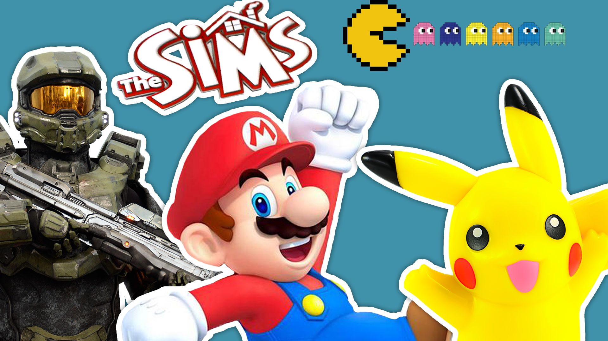

Means of Classification

Video games are frequently classified by a number of factors related to how one plays them.
A video game, like most other forms of media, may be categorized into genres. However, unlike film or television which use visual or narrative elements, video games are generally categorized into genres based on their gameplay interaction, since this is the primary means which one interacts with a video game.[30][31][32] The narrative setting does not impact gameplay; a shooter game is still a shooter game, regardless of whether it takes place in a fantasy world or in outer space.[33][34] An exception is the horror game genre, used for games that are based on narrative elements of horror fiction, the supernatural, and psychological horror.
Genres
Genre names are normally self-describing in terms of the type of gameplay, such as action game, role playing game, or shoot 'em up, though some genres have derivations from influential works that have defined that genre, such as roguelikes from Rogue,[36] Grand Theft Auto clones from Grand Theft Auto III,[37] and battle royale game from the film Battle Royale.[38] The names may shift over time as players, developers and the media come up with new terms; for example, first-person shooters were originally called "Doom clones" based on the 1993 game.[39] A hierarchy of game genres exist, with top-level genres like "shooter game" and "action game" that broadly capture the game's main gameplay style, and several subgenres of specific implementation, such as within the shooter game first-person shooter and third-person shooter. Some cross-genre types also exist that fall until multiple top-level genres such as action-adventure game.
Mode
A video game's mode describes how many players can use the game at the same type. This is primarily distinguished by single-player video games and multiplayer video games. Within the latter category, multiplayer games can be played in a variety of ways, including locally at the same device, on separate devices connected through a local network such as LAN parties, or online via separate Internet connections. Most multiplayer games are based on competitive gameplay, but many offer cooperative and team-based options as well as asymmetric gameplay. Online games use server structures that can also enable massively multiplayer online games (MMOs) to support hundreds of players at the same time. A small number of video games are zero-player games, in which the player has very limited interaction with the game itself. These are most commonly simulation games where the player may establish a starting state and then let the game proceed on its own, watching the results as a passive observer, such as with many computerized simulations of Conway's Game of Life.
Intent
Most video games are created for entertainment purposes, a category otherwise called "core games".[23]. There are a subset of games developed for additional purposes beyond entertainment. These include:
Casual games
Casual games are designed for easy of accessibility, simple to understand gameplay and quick to grasp rule sets, and aimed at mass market audience, as opposed to a hardcore game. They frequently support the ability to jump in and out of play on demand, such during commuting or lunch breaks. Numerous browser and mobile games fall into the casual game area, and casual games often are from genres with low intensity game elements such as match three, hidden object, time management, and puzzle games.[41] Causal games frequently use social-network game mechanics, where players can enlist the help of friends on their social media networks for extra turns or moves each day.[42] Popular casual games include Tetris and Candy Crush Saga.
More recent, starting in the late 2010s, are hyper-casual games which use even more simplistic rules for short but infinitely replayable games, such as Flappy Bird.
Educational games
Education software has been used in homes and classrooms to help teach children and students, and video games have been similarly adapted for these reasons, all designed to provide a form of interactivity and entertainment tied to game design elements. There are a variety of differences in their designs and how they educate the user. These are broadly split between edutainment games that tend to focus on the entertainment value and rote learning but are unlikely to engage in critical thinking, and educational video games that are geared towards problem solving through motivation and positive reinforcement while downplaying the entertainment value.[44] Examples of educational games include The Oregon Trail and the Carmen Sandiego series. Further, games not initially developed for educational purposes have found their way into the classroom after release, often those that feature open worlds or virtual sandboxes, such as Minecraft.